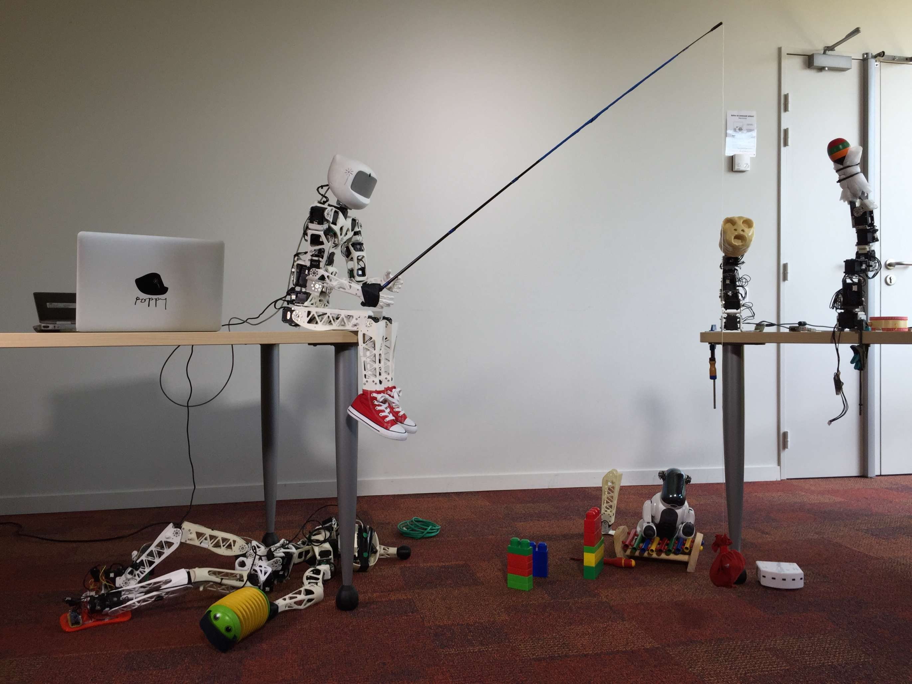

Pypot is a library developed in the inria FLOWERS team to make it easy and fast to control custom robots based on dynamixel motors. This framework provides different levels of abstraction corresponding to different types of use. More precisely, you can use pypot to:
Pypot has been entirely written in Python to allow for fast development, easy deployment and quick scripting by non-necessary expert developers. It can also benefits from the scientific and machine learning libraries existing in Python. The serial communication is handled through the standard library and thus allows for rather high performance (10ms sensorimotor loop). It is crossed-platform and has been tested on Linux, Windows and Mac OS.
Pypot is also compatible with the V-REP simulator. This allows you to seamlessly switch from a real robot to its simulated equivalent without having to modify your code.
Finally, it has been developed to permit an easy and fast extension to other types of motors and sensors.
Pypot is part of the Poppy project aiming at developing robotic creations that are easy to build, customize, deploy, and share. It promotes open-source by sharing hardware, software, and web tools.
At the moment we already proposed a few Poppy Creatures:

All those creatures are based on a combination of standard dynamixel actuators, 3D printed parts and open-source electronics such as Arduino boards. Both the hardware (3D models, electronics...) and software can be freely used, modified and duplicated.
The full pypot documentation on a html format can be found here. It provides tutorials, examples and a complete API.
The documentation is slowly moving toward Jupyter Notebooks are they are such a powerful tool for writing and sharing tutorials, experiments or pedagogical contents.
They can be found here with a detailed explanation on how they can be used, installed, and modified.
Pypot is a library entirely written in Python. It works with Python 2.7, 3.3+ and pypy-2.5. It is crossed platform and has been tested on Windows, Mac, Linux - yet specific usb to serial driver may be required depending on your system (see below).
Pypot also requires the following python package: pyserial 2.6 (or later) numpy * scipy
You can build and install pypot with the typically python way:
cd pypot
python setup.py install
or directly via pip:
pip install pypot
You will also have to install the driver for the USB2serial port. There are a few devices that have been tested with pypot that could be used:
For more details on the installation procedure, please refer to the installation section of the documentation.
The roadmap of the project can be found here.